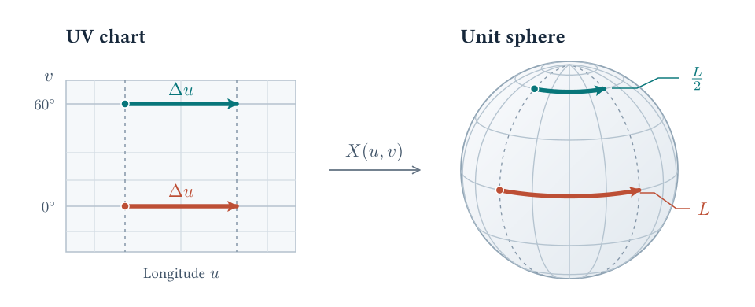
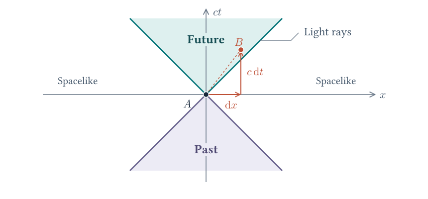

A friend once told me about an interview question that caught him off
guard.
What does differential geometry have to do with black holes?
He wished he had had an answer. I kept thinking about it from a computer
graphics perspective. If a camera ray no longer follows
origin + t * direction, how do we render what it sees?
We can answer that with three ideas: metrics, light cones, and geodesics.
We'll turn them into code and use the same ray integrator to draw an
interactive black hole.
What is differential geometry?
Imagine an ant walking on a globe. From up close, the ground looks like a
flat patch, and two numbers are enough to record the ant's position.
That's the idea of a two-dimensional manifold. Each patch
has a coordinate chart, and overlapping charts can describe the same
point. Longitude and latitude work for most of the globe, but longitude
loses its meaning at the poles. The pole is an ordinary point on the
sphere, and a chart centered there works just fine.
Now ask the ant to move east by ten degrees of longitude. At the equator
it walks along a circle with the full radius of the globe. At 60 degrees
latitude the circle has half that radius, so the ant walks half as far for
the same ten-degree change (Fig. 1). A
metric supplies the conversion from changes in chart
coordinates to distances and angles measured on the surface.

Same step in UV, different lengths on the sphere.
For a unit sphere, a longitude step
\Delta u at fixed latitude
v traces an arc of length
\cos(v)\,|\Delta u|. At
60^\circ, that arc has half the length of
the corresponding arc on the equator.
For a surface in 3D, let X(u,v) map UV
coordinates to world space and let J be its
Jacobian. A small coordinate displacement
\mathrm{d}q maps to
J\,\mathrm{d}q in the tangent plane. Taking
its Euclidean squared length gives the surface metric
g=J^{\mathsf T}J.
On the unit sphere, this matrix gives longitude steps a squared weight of
\cos^2 v and latitude steps a squared
weight of 1. The two coordinate directions
are perpendicular, so there is no cross term. You can read the metric as
the local rule for turning UV movement into ruler movement.
Once we know how to measure lengths and angles, we can ask what it means
to keep going straight along a surface. A great circle on a sphere is a
geodesic. More generally, a geodesic carries its own
tangent direction by parallel transport. Two meridians start out parallel
at the equator and meet at a pole. That convergence gives a useful
intuition for what curved spacetime can do to a bundle of light rays.
Compare the three surfaces below (Fig. 2).
Negative, zero, and positive Gaussian curvature, from left to
right.
A cylinder can be unrolled into a plane without stretching. Image by
Nicoguaro / Wikimedia Commons
(CC0).
For the ant, the metric answers how far a step goes and which path keeps
going straight. To trace light near a black hole, we ask the same
questions about spacetime. The difference is that a step now has a time
component, and its length rule also tells us which directions light can
take.
Black holes, relativity, and light
In special relativity, all inertial observers measure
the same speed of light in a vacuum. For an event, its light cone
describes where light could have come from and where it can go. On a
spacetime diagram with one spatial axis and
ct on the vertical axis, its boundary
consists of straight lines with slopes of
\pm 1(Fig. 3).

Light sets the boundary of cause and effect. Light
travels along the diagonal edges. Event B lies in the future cone of A.
The orange arrows show its coordinate offsets from A.
In general relativity, the spacetime metric can vary
from place to place. A small, freely falling lab can still use special
relativity as a local approximation. Over a larger region, the metric
determines how those local light cones fit together. Light in a vacuum
follows null geodesics. Rays from the same distant source
can arrive at a camera from different directions, producing multiple
images or arcs through gravitational lensing
(Fig. 4).
The Cosmic Horseshoe. A foreground galaxy bends light
from a background galaxy into a nearly complete blue ring. Image credit
ESA/Hubble & NASA
(CC BY 4.0,
resized and converted to WebP).
A black hole's event horizon is a causal boundary. Once
inside, light and matter cannot send a signal to a distant outside
observer. For a spherical, non-rotating, uncharged black hole, the horizon
has an areal radius of r_s=2GM/c^2. The
coordinate r is defined so that a sphere at
that radius has surface area 4\pi r^2.
The cover shows M87*, reconstructed by the Event Horizon Telescope from
millimeter-wave observations. The bright ring is shaped by emission from
nearby material and by lensing. The appearance of the central dark region
depends on both. In the spherical model below, the horizon, the photon
sphere, and the critical curve seen by a distant camera have three
different radii.
Back at the renderer, a pixel gives us a direction at the camera. We need
the metric to tell us how to follow that direction through spacetime, then
decide whether the ray reaches a light source or falls through the
horizon. The next section turns those two decisions into code.
Rendering a black hole with Lorentzian geometry
Change the dot product
Spacetime in relativity is a Lorentzian manifold. Each
event has an inner product on its tangent space, and a nonzero vector can
have zero squared norm. With signature
(-,+,+,+), flat Minkowski spacetime has the
following line element.
In the spacetime diagram (Fig. 3), the orange
horizontal arrow from A measures
\mathrm{d}x, the change in position along
the plotted spatial axis. The vertical arrow measures
c\,\mathrm{d}t, the elapsed coordinate time
multiplied by the speed of light so both axes use length units. We take a
slice at fixed y and
z, so
\mathrm{d}y=\mathrm{d}z=0. The squared
spacetime interval is therefore
\mathrm{d}s^2=\mathrm{d}x^2-(c\,\mathrm{d}t)^2. This is a signed quantity computed from the metric. The diagonal drawn
between the events shows their displacement, and its Euclidean length on
the page carries no spacetime meaning.
For light, \mathrm{d}s^2=0. This gives the
allowed directions at a point. The geodesic equation says how the
direction changes as we follow the ray. Let
\lambda be an affine parameter and
k=\mathrm{d}x/\mathrm{d}\lambda the ray
tangent.
The Christoffel symbols \Gamma, computed
from the metric and its first derivatives, express parallel transport in
our chosen coordinates. In inertial Cartesian coordinates on flat
spacetime, they vanish, and the equation reduces to the straight ray we
started with.
The full geodesic equation evolves all four coordinates. For our image, we
only need the spatial path and the places it intersects. The symmetry of a
non-rotating black hole lets us reduce that calculation to a small system
we can integrate per pixel.
Integrate one ray
Outside a non-rotating, uncharged black hole, we can use the
Schwarzschild metric. Set G=c=1, so the
mass parameter M has units of length.
Spherical symmetry confines each non-radial ray to a plane through the
center, which we can choose as the equatorial plane. Write
f(r)=1-2M/r.
Time translation and rotational symmetry give two conserved quantities,
E=f\,\mathrm{d}t/\mathrm{d}\lambda and
L=r^2\,\mathrm{d}\phi/\mathrm{d}\lambda.
Substitute them into \mathrm{d}s^2=0, write
u=1/r and
b=|L/E|, and use the angle
\phi as the integration parameter. The
primes below denote derivatives with respect to
\phi.
The state is just (u,u'). Apply one
fourth-order Runge–Kutta (RK4) update per angular step, then plot each
position as (r\cos\phi,r\sin\phi). The demo
draws a straight reference ray at the same
b by setting the mass term to zero.
vec2 derivative(vec2 state) {
float u = state.x;
return vec2(state.y, 3.0 * mass * u * u - u);
}
// Advance state using RK4, then plot (cos(phi), sin(phi)) / state.x.
Rays start on the right. Lavender shows the flat path and orange shows
the Schwarzschild path. The solid circle marks the horizon and the
dashed circle marks the photon sphere.
Try moving b/M from
5.21 to
5.18. The first ray bends around the black
hole and escapes. The second crosses the horizon. Setting
u'=u''=0 gives the unstable circular photon
orbit at r=3M. Substituting that radius
into the first radial equation gives the critical impact parameter
b_{\mathrm{crit}}=3\sqrt{3}\,M\approx5.196\,M. The event horizon is at 2M(Fig. 5).
Two radii in space, one radius on the screen. The event
horizon and photon sphere are located at specific values of
r. The critical curve separates camera
directions by their impact parameter b.
Trace backward from the camera
The orbit plot follows a single ray chosen by its impact parameter.
Rendering repeats the same integration for every pixel. This time the
starting point is the camera and the pixel determines the initial ray
direction.
In the fragment shader, generate one ray per pixel in the camera's local
orthonormal frame. The outward radial direction radial0 and
the ray's tangential component angular0 span its orbital
plane. The camera is static at r_0=30M. If
the ray makes an angle \alpha with the
inward radial direction, then
b=r_0\sin\alpha/\sqrt{f(r_0)}. This relates
the direction we choose in the camera frame to the conserved quantity in
the orbit equation.
vec3 planeTangent = ray + cosAlpha * radial0;
vec3 angular0 = normalize(planeTangent);
vec2 state = vec2(u0, u0 * sqrt(cameraF) * cosAlpha / length(planeTangent));
// RK4 marches along phi. At u = 0 the ray escapes toward the sky.
vec3 escapeDirection = cos(phi) * radial0 + sin(phi) * angular0;
Escaping rays sample a procedural star field. Rays that reach the horizon
stop and contribute no background light. Exactly radial rays are handled
separately because L=0 and
\phi cannot parameterize their path. Toggle
Curvature to compare the star field and central
shadow.
Turn curvature off to compare the shadow and lensed star field with a
flat-spacetime view.
Sample an accretion disk
So far, a ray either finds the distant sky or reaches the horizon. An
accretion disk gives it a third place to pick up light along the way. We
keep the same integrator and add an intersection test inside its loop.
Add a thin disk in the plane y=0, with
material emitting between 6M and
19M. The innermost stable circular orbit in
Schwarzschild spacetime is at 6M, which we
use as the inner edge of this model disk. A ray crosses the disk when
\texttt{radial0.y}\cos\phi+\texttt{angular0.y}\sin\phi=0. At each crossing, interpolate the integrated state to find the radius
and sample the disk if the crossing falls in the emitting region. A ray
can pass through the disk more than once, bringing the far side of the
disk into view above or below the shadow.
float planeHit = mod(atan(-radial0.y, angular0.y), PI);
// Each step that brackets planeHit samples the thin disk:
vec2 hit = mix(state, next, clamp((planeHit - phi) / STEP, 0.0, 1.0));
if (hit.x >= 1.0 / 19.0 && hit.x <= 1.0 / 6.0) {
// Sample emissivity and add it, weighted by the remaining transmission.
}
planeHit += PI;
The disk uses procedural color and texture. Its brightness is weighted by
the cube of a frequency-shift factor to illustrate gravitational redshift
and Doppler brightening from orbiting material. The light paths follow the
Schwarzschild metric, and the emission and opacity are modeled with simple
shading rules. Near the critical curve, the numerical step size and
iteration limit constrain how many fine rings we can resolve. Real images
of M87* also depend on plasma, magnetic fields, observing frequency, and
spin.
Drag horizontally to orbit, or focus the image and use the arrow keys.
Adjust elevation to see the disk from a different angle. Use Animate
disk to pause or resume the slowly rotating disk texture.
Move the elevation slider to see the disk go from a narrow band to a
nearly face-on ring. Turn off the disk to see the lensed stars, or turn
off curvature to see the disk rendered with straight rays.
Open the interactive demo ·
Read the full GLSL shader
Here is how I would answer the interview question now.
Differential geometry gives us the metric and the equations for
geodesics. A black hole gives us a particular metric. Trace null geodesics
in that metric and you can determine which pixels see the background,
which see glowing material, and which stay dark.